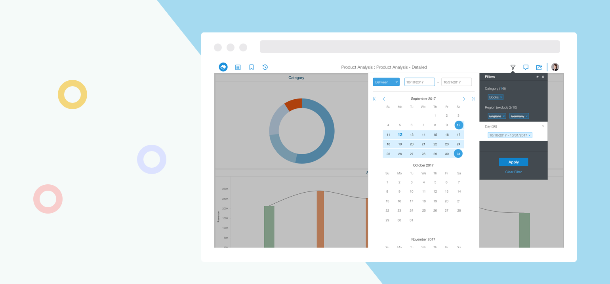

-
Calendar
2018 · Website
MicroStrategy Library is a web-based dashboard consumption software which allows user to save and view different dashboards, filter data in dashboard and collaborate with others on analyzing dashboards. I am working as UX/UI designer in this product. Here I will focus a filter feature that I’ve worked on to demonstrate the design process and design thinking.
Design Background
The feature that needs to be redesigned is called calendar filter. The functionality is for users to set a time range to filter data, it can be either fixed dates or relative dates. The previous design was confusing and lots of users complained about it.
The Target Users
The target users for the calendar filter can be divided into two groups, 80% of the users would use the fixed days, 20% of users would set rolling days and check the data frequently as it updates.
Users who use the static days can be anyone who has access to this dashboard, can be data analysis, a store manager, a sales person, or executives.
Users who use the dynamic days are more advanced users, mostly used in financial report which has some general shortcuts like MTD, QTD, YTD.Identify Design Problem
To identify the current design problem, I did 6 internal usability tests diverse in familiarity with Library and financial reporting because the calendar filter is mostly used in financial reports. From the tests, I got a lot of useful feedback. After test results consolidation, here are design problems I found from the old design:
1. It’s very hard for users to find the custom option, which they prefer to call it dynamic;
2. It’s very rare that users would use months/days together, most of time it’s either using days or months;
3. Users would like to use some shortcuts but unable to find;
4. The visual is ver heavy and very easy to skip the "To" section in dynamic dates.The Jobs to Be Done
For users who set static days:
- Set a day range
- Set time before a day
- Set time after a day
- Set time on a dayFor users who set dynamic days:
- Use pre-defined shortcuts
- Set quick range, like last/next X days/months/quarters/years
- Set more advanced rangeNew Design and Validation
Having all these in minds, I created the new design and tested again on internal users and got positive feedback on the new design. You can view the shipped design in the product below:
Final Outcome
Users like the new calendar a lot and here’s a quote from a user in the MicroStrategy community "This functional would also be very helpful in Web Authoring(another MicroStrategy product). Why? As this enables developer to define dynamic YTD, MTD, QTD definition as a starting point for example or pure YTD or MTD chapters. Currently this is not possible." I consider this redesign a big improvement for user experience.